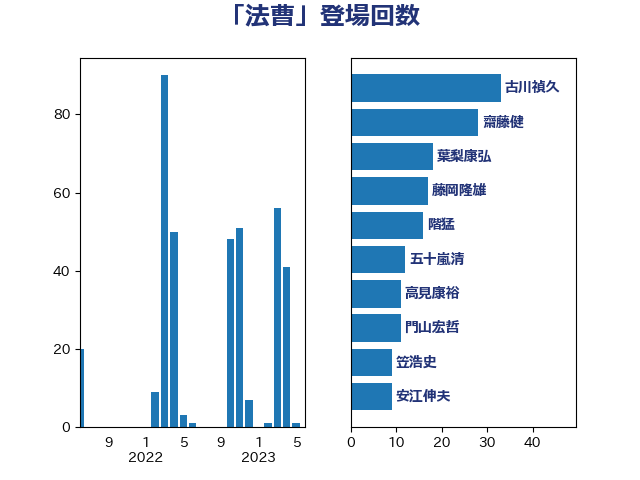

単語「法曹」

| 古川禎久 | 自由民主党 | 33 回 |
| 齋藤健 | 自由民主党 | 28 回 |
| 葉梨康弘 | 自由民主党 | 18 回 |
| 藤岡隆雄 | 立憲民主党 | 17 回 |
| 階猛 | 立憲民主党 | 16 回 |
| 五十嵐清 | 自由民主党 | 12 回 |
| 高見康裕 | 自由民主党 | 11 回 |
| 門山宏哲 | 自由民主党 | 11 回 |
| 笠浩史 | 無所属 | 9 回 |
| 安江伸夫 | 公明党 | 9 回 |
| 吉田はるみ | 立憲民主党 | 9 回 |
| 谷合正明 | 公明党 | 8 回 |
| 牧山ひろえ | 立憲民主党 | 8 回 |
| 佐々木さやか | 公明党 | 8 回 |
| 鈴木庸介 | 立憲民主党 | 6 回 |
| 山田勝彦 | 立憲民主党 | 5 回 |
| 鎌田さゆり | 立憲民主党 | 4 回 |
| 川合孝典 | 国民民主党 | 4 回 |
| 吉田統彦 | 立憲民主党 | 4 回 |
| 加田裕之 | 自由民主党 | 4 回 |
| 野上浩太郎 | 自由民主党 | 3 回 |
| 石井苗子 | 日本維新の会 | 3 回 |
| 末松信介 | 自由民主党 | 3 回 |
| 守島正 | 日本維新の会 | 3 回 |
| 嘉田由紀子 | 無所属 | 3 回 |
| 田所嘉徳 | 自由民主党 | 2 回 |
| 田名部匡代 | 立憲民主党 | 2 回 |
| 漆間譲司 | 日本維新の会 | 2 回 |
| 前川清成 | 日本維新の会 | 2 回 |
| 高良鉄美 | 無所属 | 1 回 |
| 米山隆一 | 立憲民主党 | 1 回 |
| 石橋林太郎 | 自由民主党 | 1 回 |
| 津島淳 | 自由民主党 | 1 回 |
| 永岡桂子 | 自由民主党 | 1 回 |
| 杉久武 | 公明党 | 1 回 |
| 本庄知史 | 立憲民主党 | 1 回 |
| 山下貴司 | 自由民主党 | 1 回 |
| 宮崎政久 | 自由民主党 | 1 回 |
| 堤かなめ | 立憲民主党 | 1 回 |
| 仁比聡平 | 日本共産党 | 1 回 |
| 中田宏 | 自由民主党 | 1 回 |